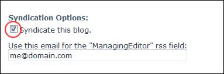
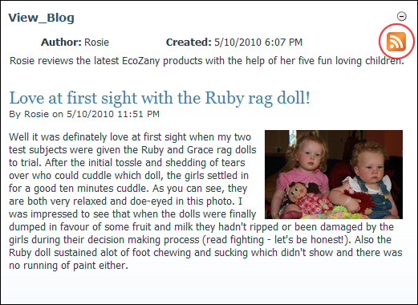
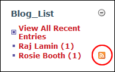

Enabling/Disabling Blog Syndication
How to enable or disable syndication of your blog. This can be performed by bloggers on their own blog and by Administrators on all blogs.
- Click the Blog Settings link on the New_Blog module - OR - Click the blog name on the Blog_List module and then select Edit Blog Settings from the View_Blog module actions menu. This opens the Edit Blog page.
- Go to the Syndication Options section.
- At Syndicate this blog, to enable syndication - OR - to disable it.

- In the Use this email for the "ManagingEditor" RSS text box, enter an email address.
-

RSS Button displays on Syndicated Blogs on the View_Blog module

RSS Button displays beside Syndicated Blogs on the Blog_List module
-
See "Configuring RSS Settings for Blogs"